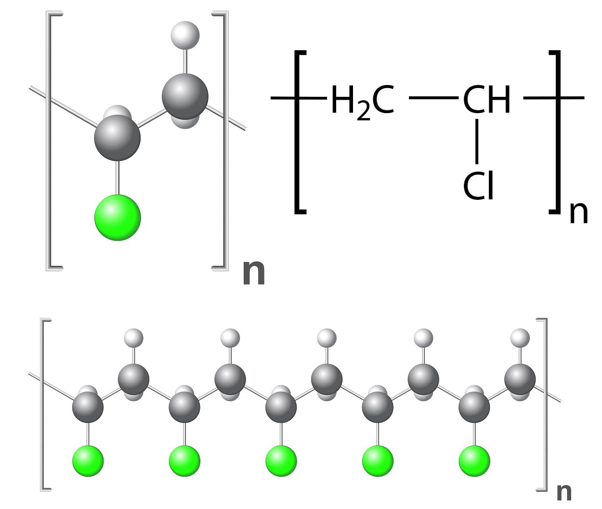

ESTRUCTURA DEL PVC
Se trata de un homopolímero de cloruro de vinilo lineal. Las cadenas macromoleculares de PVC son poco ramificadas. Los grupos cloro laterales están estéricamente desordenados (atáctico) a lo largo de la macromolécula, dando lugar a un polímero polar. El contenido teórico de cloro es aproximadamente del 57%.
<

PROPIEDADES